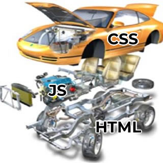

This week we will explore the powerhouse of web development, JavaScript. What it is, how it works, and how it fits into the base web site standards we all know and love, HTML and CSS.
JavaScript is an Object Oriented Scripting language, that at it's simplest adds interactivity to a website.
If we were to think of a website as a car, the various parts could be broken down as follows:
HTML would be the chassis and structural components of the car. The bits that hold everything together and make it what we know as a car.
This is as HTML works on a website, the HTML forms the skeleton, the bones on which the site is built.
The CSS would be the body of the car, the shell, the paint, the interior, everything about how the car looks.
Much as on a web site how everything is styled using CSS, the color scheme, layout, is all controlled by CSS.
The JavaScript (JS) is the engine, driveshaft, pedals and gearbox. It is the bit the enables the car to be driven. It is what tells the engine to accelerate when the driver presses the accelerator. It Lets the user interact and "control" the site.
JavaScript controls a website, by interacting with the DOM, or Document Object Model. In this, every element on a webpage from the browser window itself, to the individual element tags, are what are referred to as Objects.
Objects are essentially what you would think of as an object. A thing that you can identify, and which you "know" things about.
Take the above childrens building blocks toy. We know that these are building blocks just by looking at them, we know they are made of wood. We know that there are six of them.
This is much like an object in JavaScript, it is a "thing" which we know information about as it is stored inside. We could describe these childrens blocks in JavaScript as below.
// This format defines an object called Childrens Blocks
var childrensBlocks = {
description: "Toy blocks for a child",
contents: block,
quantity: 6
}
// This is creating a second object called block,
which is included in the childrensBlocks object as "contents"
var block = {
description: "A single block",
material: "Wood",
numSides: 6,
Length: 5,
Width: 5,
Height: 5
}
In the above example I demonstrated creating two objects in JavaScript, the first is the Toy "childrensBlocks", in here we have a description, of what "childrensBlocks" are, what is contained in the "childrensBlocks" toy, and how many of them are in the toy. You will notice that the contents of childrensBlocks is another object called "block". Which we have a description, material, how many sides and the dimensions of the sides which allow us to understand the shape of the block.
This is how objects work, they are organised "things" which have properties, which can be read, manipulated, or changed with JavaScript. The key is that EVERYTHING is an object, and has these properties. From ones that you create as above, to <p> tags, to the browser window. Everything is an object and can be manipulated with JavaScript.